Pokémon in the NYPL archives
2018-11-11 14:10:04
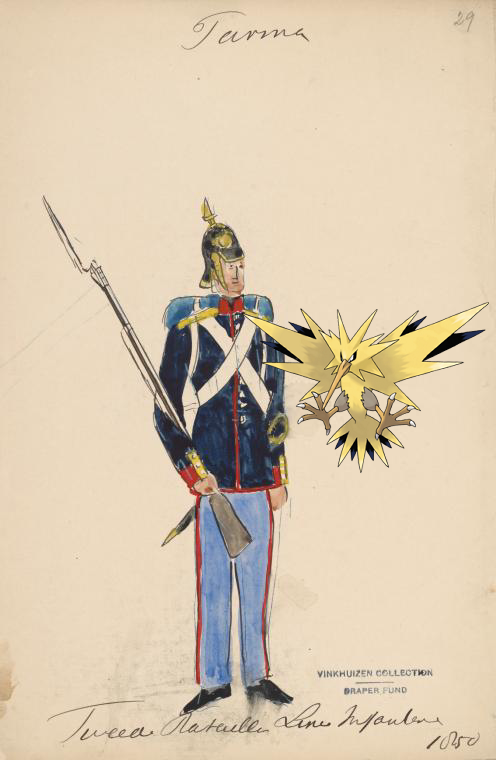
Zapdos on
Italy. Parma, 1850-1851.
2018-11-11 12:10:08
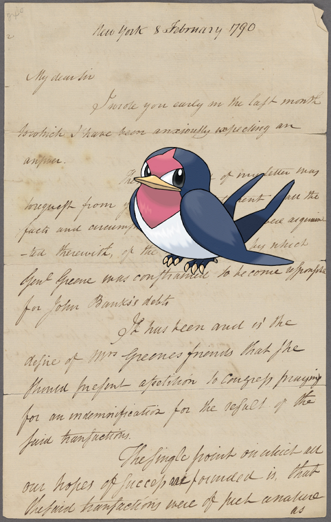
Taillow –
Edward Carrington
!
2018-11-11 10:10:05
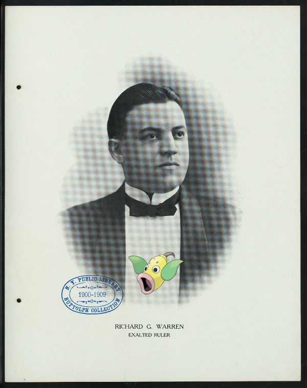
Weepinbell on
25TH ANNIVERSARY [held by] PROVIDENCE LODGE NO. 14 B.P.O. ELKS [at] "INFANTRY HALL, PROVIDENCE, RI" (OTHER [PRIVATE];)
!
2018-11-11 08:10:11
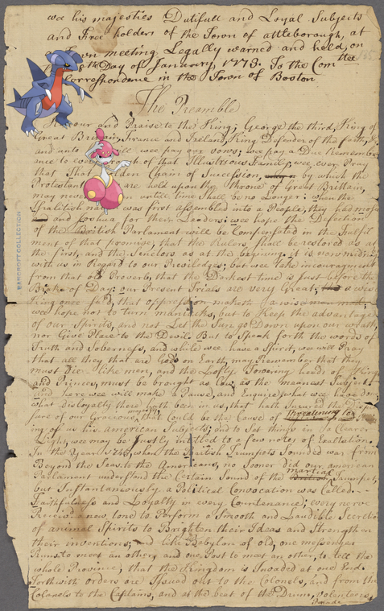
Medicham, Gabite –
Attleborough
2018-11-11 06:10:11
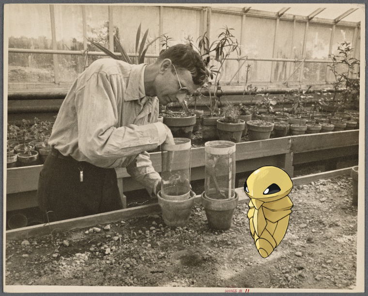
Kakuna @
Screen cups for insect exclusion or inclusion. Prince Georges County, Beltsville, Maryland.
2018-11-11 04:10:10
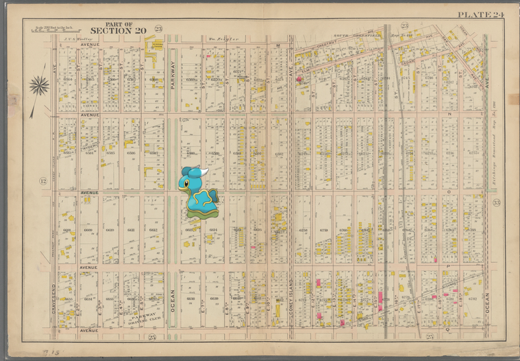
Shellos +
Plate 24: [Bounded by Avenue M., Coney Island Avenue, Elm Avenue, Bay Avenue, Cedar Avenue, Ocean Avenue, Avenue Q. and Gravesend Avenue.]
.
2018-11-11 02:10:06
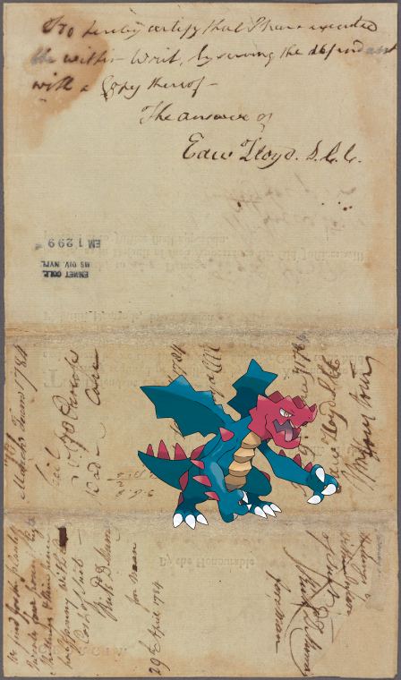
Druddigon –
Document
2018-11-11 00:10:05
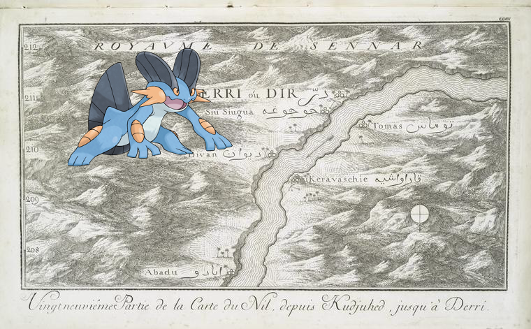
Swampert on
Vingtneuvième partie de la carte du Nil, depuis Kudjuhed, jusqu'à Derri.
.
2018-11-10 22:10:04
Volcanion –
Jack Rowe, The Only Rowe. Lightly roe(e), lightly row(e) Oer the grassy plain we go. 3 to 1
!
2018-11-10 20:10:08
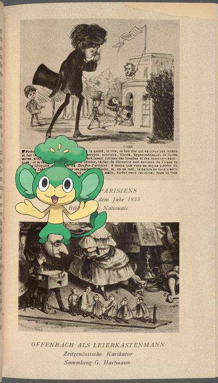
Pansage @
Bouffes-Parisiens; Offenbach als Leierkastenmann opp. p. 192
2018-11-10 18:10:11
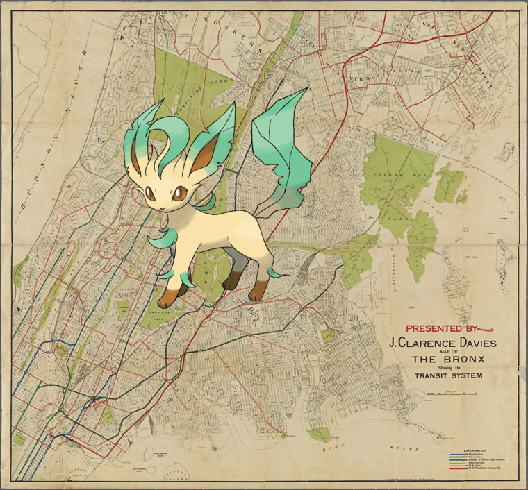
Leafeon @
Map of the Bronx, showing the transit system.
!
2018-11-10 16:10:08
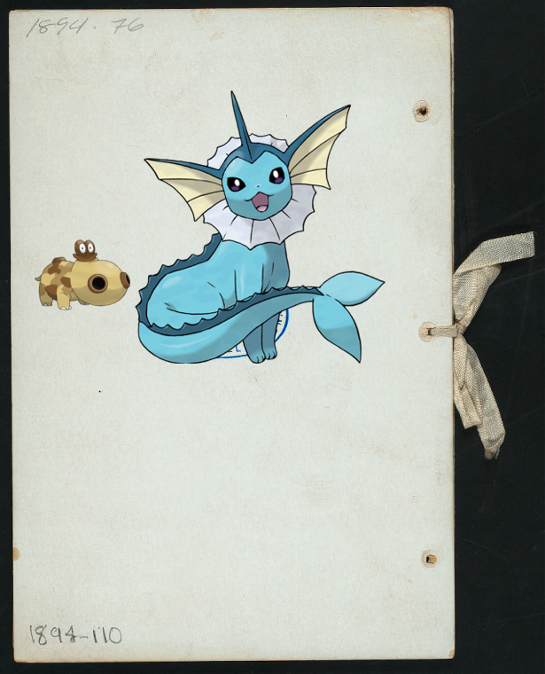
Hippopotas, Vaporeon |
COMPLIMENTARY DINNER TENDERED TO REV. CHARLES H. PARKHURST, D.D. [held by] CITY VIGILANCE LEAGUE [at] "JAEGER'S, NEW YORK, NY" (REST;)
!
2018-11-10 14:10:07
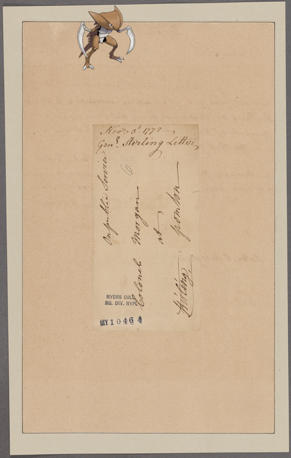
Kabutops on
Stirling, [Lord]. Elizabethtown. To Colonel Morgan
.
2018-11-10 12:10:04
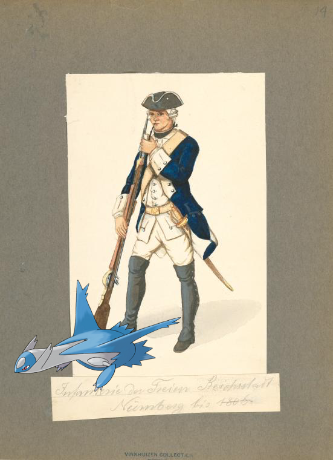
Latios on
Germany, Nurnberg, 1588-1806.
.
2018-11-10 10:10:09
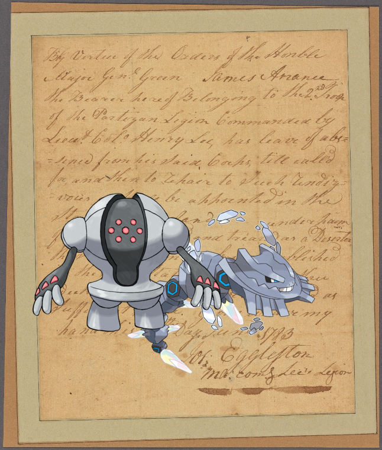
Steelix, Registeel @
Document
67
|
66
|
65
|
64
|
63
|
62
|
61
|
60
|
59
|
58
|
57
|
56
|
55
|
54
|
53
|
52
|
51
|
50
|
49
|
48
|
47
|
46
|
45
|
44
|
43
|
42
|
41
|
40
|
39
|
38
|
37
|
36
|
35
|
34
|
33
|
32
|
31
|
30
|
29
|
28
|
27
|
26
|
25
|
24
|
23
|
22
|
21
|
20
|
19
|
18
|
17
|
16
|
15
|
14
|
13
|
12
|
11
|
10
|
9
|
8
|
7
|
6
|
5
|
4
|
3
|
2
|
1
|
0